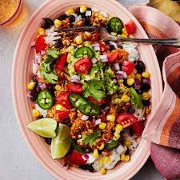

Burrito Bowls

Vegan burrito bowls! Healthy and nutritious! Can be easily made into tacos or nachos.
Ingredients
2 bell peppers, any color will work
seasonings: chili powder, cumin, paprika, cayenne powder
Steps
- Prep all of your veggies by dicing into bite sized pieces
- Heat oil in the pan and when hot, add the onions and seasonings of choice. Sautee for 4 minutes.
- Add the peppers and continue sauteeing until peppers are cooked.
- Add corn and black beans and cook until everything is hot
- Enjoy! Serve with brown rice, tortillas, or over nacho chips. Add your favorite salsa or guacamole for a kick!